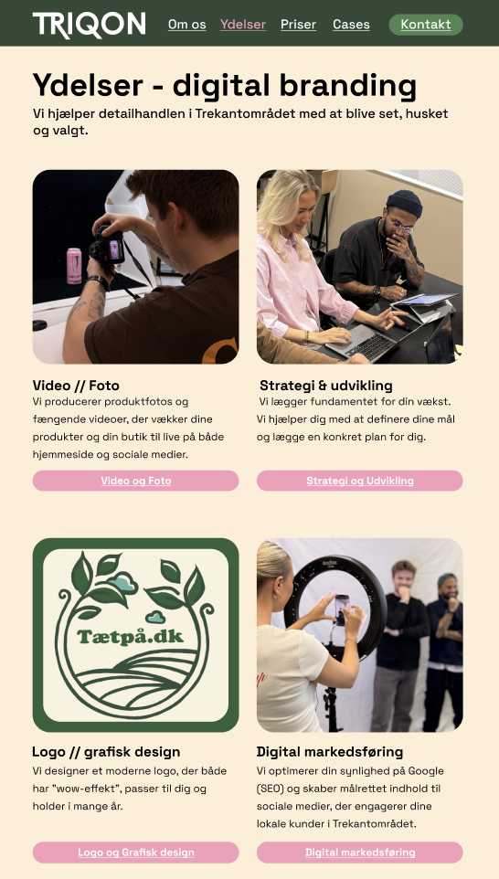
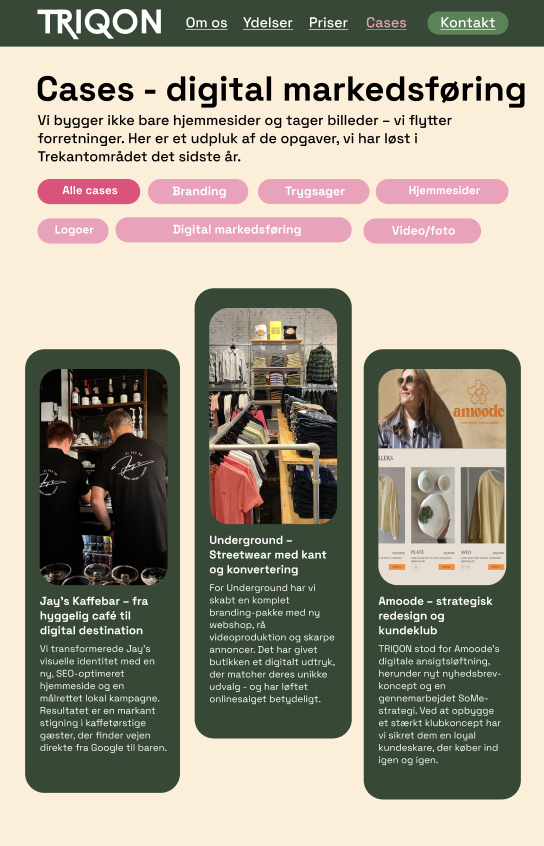

En trekant udarbejdet som animation over Trekantområdet - kunderne forstår med det samme, at TRIQON er et lokalt bureau. En video i toppen viser arbejdet og ydelser frem for at fortælle om det (Alle billeder, videoer, logo´s på hjemmesiden er taget/udarbejdet af os).

Ydelser
Hver ydelse har en kort beskrivende tekst om ydelsen og en knap videre. De lyserøde knapper går igen på hele sitet og guider brugeren til næste skridt.

Fremvisning af tidligere cases
Kundecases kan filtreres efter kategori - den potentielle kunde finder hurtigt frem til det, de søger hos os, og kan se vores kompetencer med det.
Visuel identitet
Faglig kompetence med kreativ kant
Den mørkegrønne farve og den lyse cremefarve giver et roligt udtryk. Hvor den lyserøde er med til at adskille sig fra normalen og tilføje en kreativ dimension - generelt har siden en anderledes og legende opsætning, da formålet var at skabe "wow effekt".